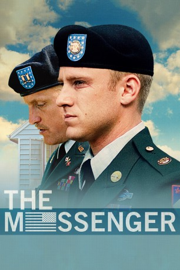
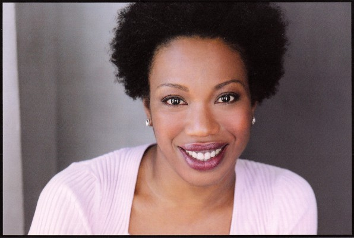
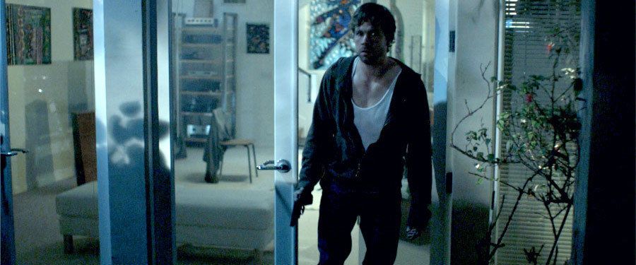

#1976 The Messenger - Die letzte Nachricht
Alternativ: The Messenger
Auszeichnungen: für 2 Oscars nominiert
 
 IMDB-Wertung: 7.1 / 10
IMDB-Wertung: 7.1 / 10  Metascore: 77
Metascore: 77 
Sergeant Will Montgomery leistet die letzten drei Monate seines Militärdienstes an der „Heimatfront“ in den USA ab. Will wird dem erfahrenen Captain Tony Stone unterstellt, um ihn bei seiner bitteren Mission zu unterstützen: Gemeinsam benachrichtigen sie die Angehörigen im Kampf gefallener Soldaten. Stones Dienstplan: streng ans Protokoll halten. Ruhe bewahren. Bloß keine Schwäche zeigen. Obwohl es ihm schwerfällt, hält Will sich an diesen Dienst nach Vorschrift und unterdrückt jede Gefühlsregung – bis er sein Herz an die junge Witwe Olivia verliert, der er die Nachricht vom Tod ihres Mannes überbringen muss. Während Will von Gewissensbissen geplagt wird, setzt er zugleich das Vertrauen seines Vorgesetzten Stone aufs Spiel, der viel labiler ist, als er zugibt.
Jahr: 2009
Dauer: 113 Minuten
FSK: 12
Land: USA Studio: Oscilloscope LaboratoriesTonspuren: DTS - ,
Untertitel:
Auflösung: 1080p (1920x816) Größe: 6563 MB
Genre: Drama, Krieg, Liebe
Regisseur: Oren Moverman
Drehbuch: Alessandro Camon, Oren Moverman
Soundtrack: Nathan Larson
Darsteller:
 Ben Foster als Staff Sergeant Will Montgomery
Ben Foster als Staff Sergeant Will Montgomery Jena Malone als Kelly
Jena Malone als Kelly Eamonn Walker als Colonel Stuart Dorsett
Eamonn Walker als Colonel Stuart Dorsett Woody Harrelson als Captain Tony Stone
Woody Harrelson als Captain Tony Stone- Yaya DaCosta als Monica Washington
-  Portia als Mrs. Burrell
- Lisa Joyce als Emily
 Steve Buscemi als Dale Martin
Steve Buscemi als Dale Martin Peter Francis James als Dr. Grosso
Peter Francis James als Dr. Grosso Samantha Morton als Olivia Pitterson
Samantha Morton als Olivia Pitterson Gaius Charles als Recruiter Brown
Gaius Charles als Recruiter Brown-  Brendan Sexton III als Recruiter Olson
- Brian Adam DeJesus als Teenager #1
- Halley Feiffer als Marla Cohen
- Peter Friedman als Mr. Cohen
 Jeremy Strong als Returning Soldier
Jeremy Strong als Returning Soldier- Fiona Dourif als Returning Soldier's Wife
 Merritt Wever als Lara
Merritt Wever als Lara- Carl Anthony Payne II als Pitterson's Father
 Marceline Hugot als Mrs. Flanigan
Marceline Hugot als Mrs. Flanigan- Michael Chernus als Alan
- Dale Soules als Cashier
- Donna Ross als Soldiers Friend , uncredited
- Paul Diomede als Motorcycle Cop
- Jahmir Duran-Abreau als Matt Pitterson
- T.J. Allen als Teenager #2
- Lindsay Michelle Nader als Claire
- Francis A. Adams als Firing Party Team Leader
- J. Salome Martinez als Captain Garcia
- Angel Caban als Mr. Vasquez
- Kevin Hagan als Mr. Flanigan
- Stevie Ray Dallimore als Kelly's Father
- Sara Jane Blazo als Kelly's Mom , uncredited
- Robert Feeley als Vietnam Veteran , uncredited
- Karen Summerton als Flirty Girl , uncredited
- Francine Bianco Tax als Reception Pianist , uncredited
Datei: X:\2009(G-M)\Messenger - Die letzte Nachricht, The (2009, FSK12, 1920x816).mkv seit 14.09.2015
Festplatte: HD 2009(G-Z)-2010(A-F)
 Es gibt insgesamt 82 Filme in der Gruppe '2009(G-M)'
Es gibt insgesamt 82 Filme in der Gruppe '2009(G-M)'